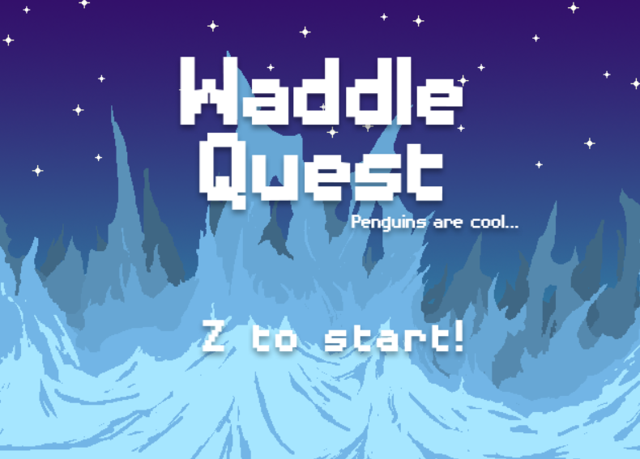
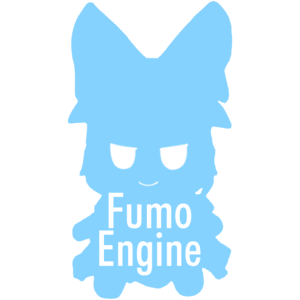

Portfolio
Games
Side Works
About Me
Resume

Lim Jun Jie | HageFX
Gameplay Programmer / Tools Programmer
+60 12-9704195
jjfreelim@gmail.com
This site is made from scratch and still heavily under development, do come back a few days later for a more complete build!





Select a game!
Itch


I'm Lim Jun Jie or you can call me JJ, I'm a gameplay programmer and tools programmer. I'm currently a final year student in UOWKDU University College, majoring in Game Development. There
I'm confident in problem-solving and creating tools to help speed up the development process as the faster you can get a prototype out, the faster you can iterate and improve on it. is
On a more personal note, my favourtie genre of games are Eroges, Puzzle, Simulation, Comedy and Metroidvanias. My hobbies involve watching anime/reading manga, building Gunpla and creating scripts/tools for fun and jokes. I also like to look into varying topics such as retro hardware emulation, cryptography, astronomy cause who doesn't like space and so much more that I could keep going till this page dies. no
I love programming and drawing as well, hence why I spent so much effort working on this portfolio be it that it didn't turn out as great as I thought, this was made in a rush in 3 days haha. Nonetheless, thank you for spending time reading through this and visiting my work (this site). secret
That aside, there's a reason why this site has such weird designs, hmmm, maybe something hidden? Something to do with that terminal? Who knows, maybe you'll find it. Starting from this page perhaps. Good luck. yet.
The puzzle is not completed yet so wait a few more days.. lol
I'm confident in problem-solving and creating tools to help speed up the development process as the faster you can get a prototype out, the faster you can iterate and improve on it. is
On a more personal note, my favourtie genre of games are Eroges, Puzzle, Simulation, Comedy and Metroidvanias. My hobbies involve watching anime/reading manga, building Gunpla and creating scripts/tools for fun and jokes. I also like to look into varying topics such as retro hardware emulation, cryptography, astronomy cause who doesn't like space and so much more that I could keep going till this page dies. no
I love programming and drawing as well, hence why I spent so much effort working on this portfolio be it that it didn't turn out as great as I thought, this was made in a rush in 3 days haha. Nonetheless, thank you for spending time reading through this and visiting my work (this site). secret
That aside, there's a reason why this site has such weird designs, hmmm, maybe something hidden? Something to do with that terminal? Who knows, maybe you'll find it. Starting from this page perhaps. Good luck. yet.
The puzzle is not completed yet so wait a few more days.. lol
This page will be replaced in the future!